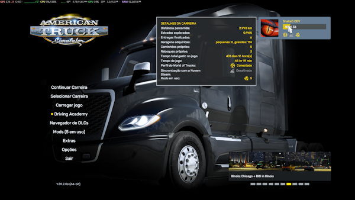
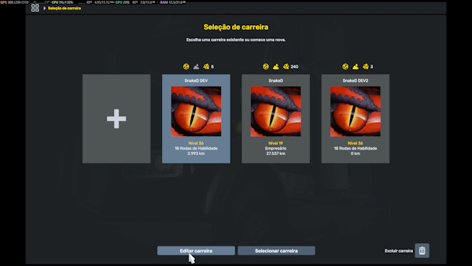
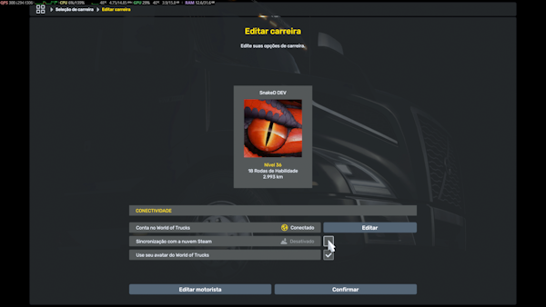
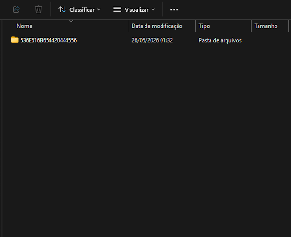

Offline Save Setup (ATS/ETS2)
Disable profile cloud sync and validate local profile folders before using Custom Jobs.
Overview
This is the primary prerequisite for SimDuty Custom Jobs (Dispatch Offer, Dispatch Active, and SimDuty Loads).
If Steam Cloud remains active on the profile, Custom Jobs may read inconsistent profile state and route context.
Use a profile with Steam Cloud sync disabled.
Validate local profiles folder in Documents.
Point SimDuty Custom Delivery root to local profile path.
Keep one dedicated offline profile for Custom Jobs operations.
Step 1: Open profile selection
- Open ATS or ETS2.
- From main menu, open the profile/career selection screen.
- Confirm the target profile is visible in the profile list.

Step 2: Select profile and open Edit
- Select the profile you will use with SimDuty.
- Click
Edit Profile(or equivalent label in your game language). - Open the profile connectivity options area.

Step 3: Disable Steam Cloud synchronization
- In profile edit screen, find cloud sync or World of Trucks connectivity row.
- Set Steam Cloud sync to
Disabled. - Confirm and save profile changes.
- Return to profile summary and verify sync status remains disabled.

Step 4: Validate local profiles folder
- Close the game or keep it in menu.
- Open Windows Explorer and go to the game Documents folder.
- Open the
profilesfolder. - Confirm at least one folder exists with letters/numbers (profile ID format).
Windows local paths:
- ETS2:
%USERPROFILE%\Documents\Euro Truck Simulator 2\profiles\ - ATS:
%USERPROFILE%\Documents\American Truck Simulator\profiles\

Path and reference
SimDuty side:
Setup > Custom Delivery > ATS profiles folderSetup > Custom Delivery > ETS2 profiles folderEconomy > Custom Delivery(Dispatch Offer / Dispatch Active)
Reference note:
- PCGamingWiki documents local save locations and Steam Cloud support for ETS2/ATS.
- Steam Cloud may also mirror files under Steam userdata app IDs: ETS2
227300, ATS270880.
Validation checkpoint
- Profile opens in ATS/ETS2 with cloud sync disabled.
- Local Documents path contains
profilesfolder. profilescontains at least one alphanumeric profile folder.- Selected save slot is a numeric folder under
savethat containsgame.sii. - SimDuty Custom Delivery root points to this local profile path.
- Custom Jobs flows open without profile context mismatch warnings.
Quick support
Symptom: Custom Jobs cannot detect expected profile data.
- Check: profile cloud sync state and selected root path in Setup.
- Fix: disable cloud sync, reopen game profile, and reselect local Documents path in SimDuty.
Symptom: profiles folder is empty or missing.
- Check: whether you opened ATS path while using ETS2 (or vice versa).
- Fix: launch the correct game profile once, then re-check matching Documents folder.
Symptom: path points to cloud-mirrored location.
- Check: OneDrive redirect of Documents folder and Steam userdata overlap.
- Fix: point SimDuty to the actual active local profile root and keep one offline profile for operations.
FAQ
- Do I need offline save for all SimDuty features? It is the main requirement for reliable Custom Jobs flows.
- Can I keep Steam Cloud on? For Custom Jobs, keep it off on the operational profile to avoid context drift.
- Why is the profile folder name random? ATS/ETS2 uses ID-based alphanumeric folder names for profiles.
- Should I use one profile for everything? Recommended: keep one dedicated offline profile for Custom Jobs stability.